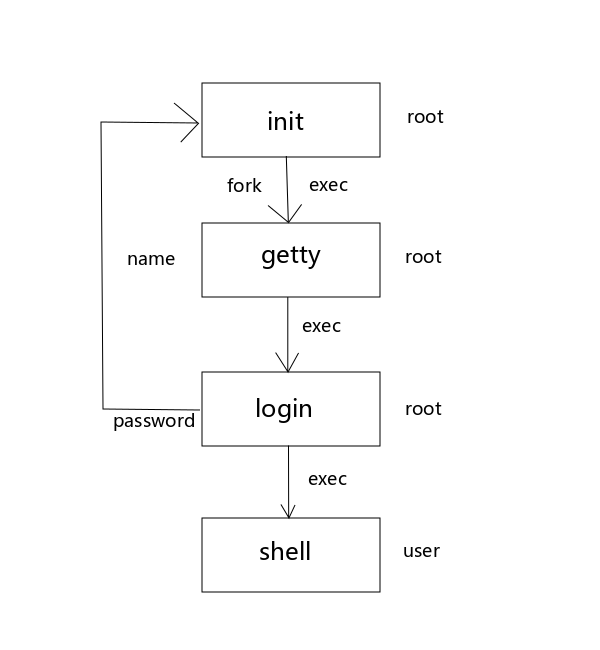

进程关系与守护进程
1.1 终端
真正意义上的终端是“笨设备”，只能接收命令的输入并返回结果。你问它 1+1=? 它也不知道，它只能把你的问题传给计算机，再把计算机返回的结果显示给你。
它出现在计算机既昂贵又庞大的年代。那时候的计算机昂贵到了只有一部分公司买得起、另一部分公司买不起，而且有些公司只能买一台，买第二台就要破产了的程度。
所以这么昂贵的设备如果只能给一个人使用太浪费了，于是为了让计算机可以被多人使用，就出现了终端这种设备。
接下来我们简单的聊聊 Linux 是如何使用户登录的。

图1 Linux 用户登录过程
如图1 所示，内核自举时创建 1 号 init 进程，init 对每一个终端执行 fork(2) + exec(3) + getty(1) 命令，getty(1) 命令的作用是要求用户输入用户名。
等待用户输入完成用户名后，getty(1) 会 exec(3) + login(1)。
login(1) 命令首先根据用户名通过 getpwnam(3) 函数得到用户的口令文件登录项，然后调用 getpass(3) 函数以屏蔽回显的形式获得用户的密码，最后再通过 crypt(3) 函数将加密后的用户口令与阴影口令文件用户登录项中的 pw_passwd 字段相比较，认证失败几次之后就会回到上图的第一步，init 进程将重新执行 fork(2) + exec(3) + getty(1)。
如果认证成功则启动用户登录 shell，并使用 chown(2) 更改当前登录终端的所有权，使登录用户成为它的所有者。登录之前的步骤都是 root 身份，所以真正用户权限被降下来就是在这个时候发生的。
当然 login 要做的事情不仅仅只有这点儿，它还要做许多其它需要为用户初始化的事情。
说句题外话，大家注意到了没有，如果获取用户名或密码的时候函数的编写者敢使用类似 scanf(3) 这样的函数读取用户输入，则很容易遭受缓冲区溢出攻击。
1.2 会话(Session)
一次成功的终端登录就是一个会话。现在一次 shell 的成功登录，相当于那时候终端的成功登录。会话相当于是进程组的容器，它能承载一个或多个进程组。
1.3 进程组
进程组用来承载进程，一个进程组中有一个或多个进程，它是一个或多个进程的集合（也可以看作是容器）。一个进程不但拥有唯一的 PID，同时也属于一个进程组。一个进程最少有一个线程在运行，
如何产生一个进程组呢？很简单：
1 | # 使用管道可以用一条命令产生一个进程组(多个进程)。 |
进程组分为前台进程组和后台进程组
一个会话中只能有一个前台进程组，也可以没有前台进程组。
终端设备(如键盘)只能与前台进程通讯，不能与后台进程通讯，根据约定，如果终端设备与一个后台进程关联，就会杀掉这个后台进程。
什么是前台进程组呢？比如你正在使用 tar 命令进行打包的时候是无法再输入其它命令的。如果 tar 命令执行的时间很长，我们就会在命令后面添加一个 & 参数，把它放到后台去运行。
ps(1) 命令的 SID(Session ID)列 就是程序运行的会话 ID。
进程是先出现的，后来人们发现进程可以拆分为多个小任务分别执行，于是便出现了线程的概念，这个到后面线程的章节会详细讨论。
如今进程已经退化为容器了，它的存在就是为了承载线程。PID 看似是进程号，实际上是线程在消耗它。
处理器在处理当前的调度的时候，其实是以线程为单位来进行调度的。所以多线程的并发要比多进程并发更加规范。因为多进程的并发是先成为事实标准，后来有标准化的。多线程不同，它是现有标准化，再有标准实现的。
进程和线程只是我们的说法，内核中只能看到线程，内核所谓的进程管理其实就是线程管理，内核永远以线程为单位执行任务。
总结来说：
会话用来承载进程组，进程组用来承载进程，进程用来承载线程。
第九章了解这几个概念就差不多了，还记得我们前面提到的 myshell 吗，用 fork(2) + exec(3) + wait(2) 来实现一个可以执行外部命令的 shell。如果你想实现一个支持内部命令的 shell 那么可以仔细学习一下第九章的内容，shell 内部命令处理的主要知识点都在第九章。
- setsid(2)
1 | //setsid - create session and set process group ID |
- getpgrp();
1 | pid_t getpgrp(void); // 返回当前进程所在进程组的id |
创建一个会话并设置进程组的ID。这个函数是我们在第 9 章最有价值的函数，没有这个函数，我们后面就无法创建守护进程。
调用者不能是进程组组长，调用者在调用之后自动变为新进程组组长，并且脱离控制终端，进程 ID 将被设为进程组 ID 和会话 ID，所以守护进程通常 PID、PGID、SID 是相同的。通常的用法是父进程 fork(2) 一个子进程，然后子进程调用 setsid(2) 将自己变成守护进程，父进程退出即可。
1.4 守护进程
常常在系统自举时启动，仅在系统关闭时才终止。因为它们没有控制终端，所以是在后台运行的。
守护进程的特点：
1）脱离控制终端，ps(1) axj tty 为问号(?)。
2）是进程组的 leader，也就是 PID 和 PGID 相同。
3）通常没有父进程，由 1 号 init 接管。
4）创建了一个新会话，是 session 的 leader，所以 PID 与 SID 相同。
使用 ps(1) axj 命令查看，PID、PGID、SID 相同的进程就是守护进程。
守护进程也可以使用标准输出，但是不符合常理了，因为守护进程没有控制终端，所以守护进程一般会关闭或重定向标准输入输出流。
写守护进程的时候我们会切换工作路径，把它切换到一个一定会存在的路径，比如 /。因为假设你的守护进程是在一个可卸载设备(如U盘)上被启动的，如果不修改工作路径，该设备无法被卸载。
调用 umask(2) 是为了将文件模式创建掩码设置为一个已知值，因为通过继承得来的掩码可能会被设置为拒绝某些权限，如果守护进程中需要这些权限则要设置它。
1 | $ ps axj |
对于书上的栗子，有两点要吐槽：
1）SIGHUP 信号用于通知服务进程软重启，比如修改了某服务的配置文件之后可以通过给服务进程发 SIGHUP 信号使它重新读取配置文件，所以如果没有特殊要求不必忽略该信号。
2）如果没有特殊要求，不必关闭所有的文件描述符，仅关闭标准输入、标准输出和标注错误即可。
1.4.1 实现一个守护进程（信号章节结束后补充完整）
1 |
|
1 | tail -f /tmp/out # 动态查看该文件 |
1.4.2 如何杀死一个守护进程
1 | kill pid |
1.5 系统日志
每个程序都有必要写系统日志，但是写系统日志的权限没办法交给所有人。
守护进程不应使用标准输出，那么当守护进程需要记录一些事件或者是错误的时候怎么办呢？那就要采用系统日志了。
系统日志一般保存在 /var/log/ 目录下，但是这个目录下的日志文件权限几乎都是只有 root 才能读写，那么普通用户的日志如何写入呢？这就需要借助系统日志函数来写日志了。
1.5.1 syslogd
root 用户授权给 syslogd 服务专门写日志，然后其它程序都需要通过封装好的一系列函数调用 syslogd 服务来记录日志。这样就提高了日志的安全性了，可以防止日志文件被非法篡改。
1 | ps axj | grep "syslogd" |
1 | // closelog, openlog, syslog - send messages to the system logger |
openlog(3) 函数并非是打开日志文件，而是与 syslogd 服务建立链接，表示当前进程要写日志。
参数列表：
ident：表明自己的身份，由程序员自行指定，写什么都行。
option：要在日志中附加什么内容，多个选项用按位或链接。LOG_PID 是附加 PID，这个是最常用的。
facility：消息来源。一般只能指定一个。
| 消息来源 | 含义 |
|---|---|
| LOG_CRON | 消息来自定时任务 |
| LOG_DAEMON | 消息来自守护进程 |
| LOG_FTP | 消息来自 FTP 服务 |
| LOG_KERN | 消息来自内核 |
| LOG_USER | 默认，常规用户级别消息 |
| 表1 facility 参数的常见需选项 |
syslog(3) 函数用于提交日志内容，参数列表：
priority：优先级。详见下表：
| 级别 | 含义 |
|---|---|
| LOG_EMERG | 「严重」导致系统不可用的问题 |
| LOG_ALERT | 「严重」必须立即处理的情况 |
| LOG_CRIT | 「严重」临界条件 |
| LOG_ERR | 「严重」错误 |
| LOG_WARNING | 警告 |
| LOG_NOTICE | 正常 |
| LOG_INFO | 信息 |
| LOG_DEBUG | 调试 |
| 表2 日志优先级 |
以 LOG_ERR 为分界线，如果遇到了程序无法继续运行的问题，要报 LOG_ERR 以上的级别（包括 LOG_ERR）。
如果遇到的问题不会影响程序继续运行，报 LOG_ERR 以下级别的就可以了。
日志太多肯定对磁盘空间的要求就比较高，而且无用的日志太多会影响日志审计。日志文件中会记录哪些级别的日志是在配置文件中配置的，默认的情况是 LOG_DEBUG 以上级别的日志都会被记录。
format：类似于 printf(3) 函数的格式化字符串。注意不要使用转义字符 \n，否则日志中会记录一个字符串”\n”而不是记录一个换行符。
…：format 中占位符的参数。
closelog(3) 表示日志写入结束。
1 |
|
1 | $ tail /var/log/messages |
1.5.2 单实例守护进程
1 | $ service vsftpd start # 确定 |
有些守护进程需要在同一时间只能有一个实例在运行，它们称为单实例守护进程。它们在启动的时候会在
/var/run下面创建一个进程锁文件，守护进程启动的时候会先判断这个锁文件是否存在，如果已存在就报错并退出，如果不存在就继续运行并创建一个锁文件，退出的时候再删除它。
1 | $ cat /var/run/sshd.pid |
守护进程如果想要开机自动启动，可以配置到自动启动脚本中：/etc/rc.d/rc.local